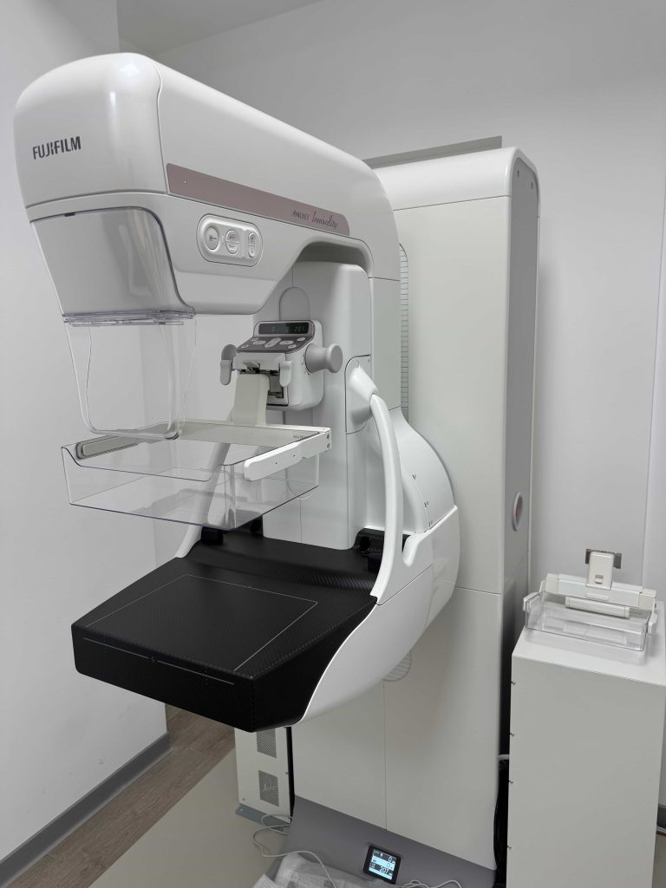

Senologia
La salute del seno, dalla visita alla mammografia 3D. Le prestazioni di senologia sono a cura della dottoressa Francesca Svegliati.

Visite ed esami
Tre prestazioni che si possono fare anche nella stessa mattina. Apri quella che ti interessa per sapere come si svolge.

Visita senologica
Il colloquio, l’esame clinico del seno e la lettura degli esami che hai già fatto. Esci sapendo cosa fare e quando tornare.
Scopri
Ecografia mammaria
Un esame con ultrasuoni, senza radiazioni e indolore. Spesso affianca la mammografia, soprattutto con il seno denso.
Scopri
Mammografia 3D con tomosintesi
Il seno ricostruito in strati sottili, letti uno alla volta. Per te si svolge come una normale mammografia.
ScopriPiù esami, una sola mattina
Quando serve, visita ed esami si fanno insieme: così esci con un quadro completo.

Dott.ssa Francesca Svegliati
Le prestazioni di senologia di Avenir sono seguite dalla dottoressa Svegliati, medico specialista in Diagnostica per Immagini con una consolidata esperienza in senologia.
Fino ad agosto 2026 ha guidato la Diagnostica per Immagini in Senologia e la Breast Unit del San Camillo Forlanini, lavorando ogni giorno insieme a chirurghi, oncologi e radioterapisti. Ha organizzato i percorsi diagnostico-terapeutici della Breast Unit e porta avanti l’attività di divulgazione con seminari e conferenze sulla prevenzione.
- Formazione · Laurea in Medicina alla Sapienza di Roma, specializzazione in Radiologia
- San Camillo Forlanini · Primario di Diagnostica per Immagini in Senologia e Responsabile della Breast Unit
- Villa Benedetta · Direzione scientifica del Centro di Senologia

Prenota il tuo controllo senologico
Chiama la segreteria o lascia il tuo numero: ti richiamiamo noi.